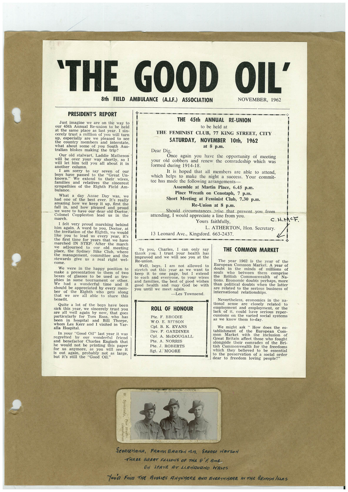

Book 1 · scan 081


Description
Transcription
Context
Review notes
Compare the machine draft with the scan. Handwriting and names need human review.
Artifacts
Edit the artifacts field in this note’s frontmatter to change these records. This summary is generated.
B01-S081-A01 — Newspaper clipping, Photo & Handwritten note — Book 1, scan 081
Types: Newspaper clipping, Photo, Handwritten note
Scope: Whole scanned page; individual items can be split out during review.
Caption: Not mapped yet.
Caption source: Not recorded yet.
Caption status: unmapped
Machine transcription
'THE GOOD OIL' 8th FIELD AMBULANCE (A.I.F.) ASSOCIATION NOVEMBER, 1962 PRESIDENT'S REPORT Just imagine we are on the way to our 45th Annual Re-union to be held at the same place as last year. I sin- cerely trust a million of you will turn up, especially are we pleased to see the county members and interstate, what about some of you South Aus- tralian blokes making the trip? Our old stalwart, Laddie Matheson will be over your way shortly, will let him tell you all about it in another am sorry to sav seven of our boys have passed to the "Great Un- known." We extend to their wives, families and relatives the sincerest sympathies of the Eighth Field Am- bulance. What a day Anzac Day was, we had one of the best ever. It's really amazing how we keep it up, first the tall in and how pleased and proud we were to have our dear old Doetor, Colonel march. Coppleston lead in the I felt very proud marching behind him again. A word to you, Doctor, at the invitation of the Eighth, we would like you to lead us every year, ins the first time for years that we have marched IN STEP. After the march adjourned meeting place, the to old Sydney Bike Club, where the management, committee and the stewards right wel- THE 45th ANNUAL RE-UNION to be held at THE FEMINIST CLUB, 77 KING STREET, CITY SATURDAY, NOVEMBER 10th, 1962 Once again you have the opportunity of meeting your old cobbers and renew the comradeship which was members are able to attend, which helps to make the night a success. Your commit- tee has made the following arrangements Assemble at Martin Place, 6.45 p.m. Place Wreath on Cenotaph, 7 p.m. Short Meeting at Feminist Club, 7.30 p.m. Should circumstances arise that prevent you from attending, I would appreciate a line from you. Yours faithfully, L. ATHERTON, Hon. Secretary. 13 Leonard Ave., Kingsford. 663-2437. C. H.MCF. We were in the happy position to make a presentation to them of two boxes phies of glasses to be used as tro- In some tournament or other. We a wonderful time and it should be appreciated by every mem- ber of the that we Eighth who gets along are all able to share this To you, Charles, can thank only say I trust your health has improved and we will Re-union. see you the Well boys, I am not allowed to stretch keep out this year as we want to it oute page, but I extend to each and everyone, to your wives and families, the best of good wishes good health and may God you until we meet again. be with -Les Townsend. THE COMMON MARKET The year 1962 is the year of the European Common Market. A year of doubt in the minds of millions of souls who between British them comprise the Commonwealth of Na- tions. Economic doubts perhaps, more than political doubts when the latter are related to the serious business of international relationships Quite a lot of the boys have been sick this year, we sincerely trust you are all well again by now, that goes particularly for Tom Ross, been in hospital and who has Bill Thorpe, whom Les Kerr and I visited in Yar- alla Hospital. In your "Good Oil" last year it was regretted and our wonderful he benefactor friend Charles Engisch that would not be printing this paper TOT anymore, as you it is out again, will see probably not but it's still the Good Oil as large, ROLL OF HONOUR Pte. F. BRODIE W.O. E. RITSON Cpl. B. K. EVANS Drv. F. GARDINER Cpl. A. McDOUGALL Pte. A. NORRIS Pte. J. ROBERTS Sgt. J. MOORE Nevertheless, economics in the na- tional sense are closely related employment and employment, or the lack of it, could have serious reper- cussions on the varied social systems as we know them to-day. We might ask " How does the es- tablishment mon of the European Com- Market with the inclusion of Great Britain affect those who fought alongside their comrades of the Bri- tish Commonwealth for the freedoms which they believed to be essential to the preservation of a social order dear to freedom loving people?" W. Symonds, Llanduano Pier Studto. SEORGEHANA, FRAnK BARTON MiM. SEORGe WATSON THREE GREAT FELLONE OF THE S' AMB- ON APAVE AT LANGUANO HALeS Tova FIND THE RUSSIES ANYWHERE AND EVERYNNERE IN THE BRITISN ISLES